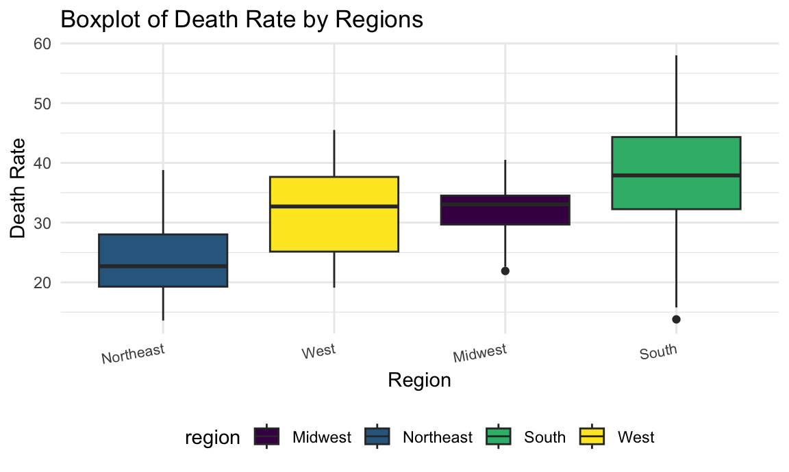
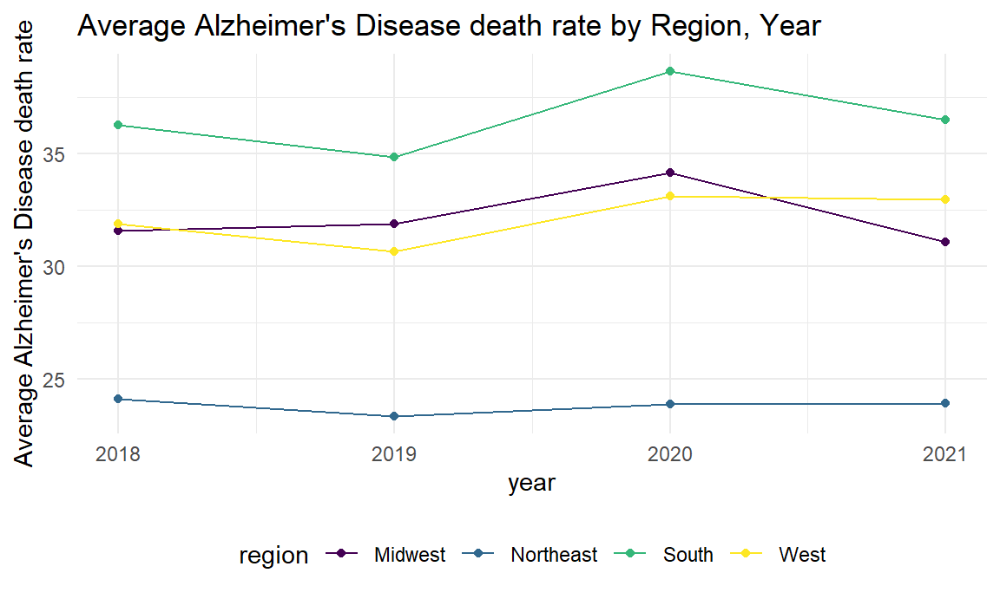
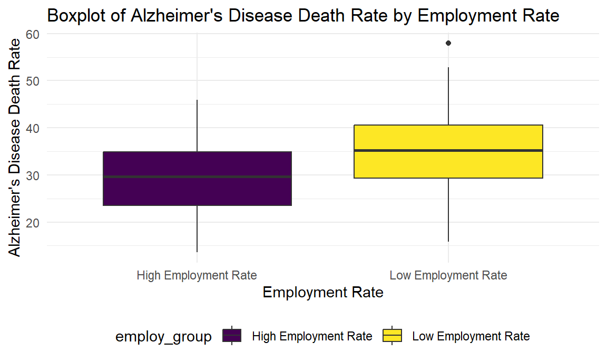

Preliminary Analysis
Analysis
1. Death rate by Regions
data<- read_csv("data/geo_data.csv") |>
mutate(region = case_when(
state %in% c("Connecticut", "Maine", "Massachusetts", "New Hampshire", "New Jersey", "New York", "Pennsylvania", "Rhode Island", "Vermont") ~ "Northeast",
state %in% c("Illinois", "Indiana", "Iowa", "Kansas", "Michigan", "Minnesota", "Missouri", "Nebraska", "North Dakota", "Ohio", "South Dakota", "Wisconsin") ~ "Midwest",
state %in% c("Alabama", "Arkansas", "Delaware", "District of Columbia", "Florida", "Georgia", "Kentucky", "Louisiana", "Maryland", "Mississippi", "North Carolina", "Oklahoma", "South Carolina", "Tennessee", "Texas", "Virginia", "West Virginia") ~ "South",
state %in% c("Alaska", "Arizona", "California", "Colorado", "Hawaii", "Idaho", "Montana", "Nevada", "New Mexico", "Oregon", "Utah", "Washington", "Wyoming") ~ "West"
))data |>
janitor::clean_names() |>
group_by(region) |>
summarise(avg_death_rate = mean(death_rate, na.rm = TRUE)) |>
arrange(avg_death_rate) |>
knitr::kable(digits = 3)| region | avg_death_rate |
|---|---|
| Northeast | 23.817 |
| West | 32.160 |
| Midwest | 32.171 |
| South | 36.584 |
The boxplot displays the distribution of Alzheimer’s Disease death rates across different regions.
While the boxplot primarily illustrates the interquartile range and median, it provides a visual representation of the spread of death rates within each region. In particular, the length of the box and the positioning of the median line indicate the central tendency, and the whiskers show the range of data.
Notably, the South region exhibits a wider spread of death rates, suggesting greater variability in Alzheimer’s Disease mortality within this region compared to others.
The observation of varying spreads among regions implies potential heterogeneity in Alzheimer’s Disease death rates, indicating the importance of further investigation into the factors contributing to this variability.
data |>
janitor::clean_names() |>
group_by(region) |>
ggplot(aes(x = fct_reorder(region, death_rate), y = death_rate, fill = region)) +
geom_boxplot() +
labs(title = "Boxplot of Death Rate by Regions", x = "Region", y = "Death Rate") +
theme(axis.text.x = element_text(hjust = 1, angle = 10, size = 8))
The boxplot shows the distribution of death rate in each region.
The variance of death rate is higher in South region.
We can roughly tell from the plot that the variances of death rate among regions are not equal. Thus, we may perform a statistical test to check heteroscedasticity.
Test of equal variances
bartlett.test(death_rate ~ factor(region), data = data) |>
broom::tidy() |>
knitr::kable()| statistic | p.value | parameter | method |
|---|---|---|---|
| 31.09801 | 8e-07 | 3 | Bartlett test of homogeneity of variances |
Based on the less-than-significance level of the p-value (usually 0.05), we have enough evidence to reject the null hypothesis of variance homogeneity. Therefore, we can assume that the variance of mortality rates is not equal under different regions. This may have important implications for some statistical methods (e.g., analysis of variance ANOVA), which typically assume variance chi-square.
t.test : Compare Mean Death Rate Between West America and Midwest America
From the boxplot above, we find that the Alzheimer’s Disease death rate in West region and Midwest region are almost overlapping. Though the median of Midwest region is higher, the variance in West region seems smaller. Thus, we want to study if the mean death rate in the two regions are significantly different.
Extract death rate in West America and Midwest America
west_death_rate <- data |>
filter(region == "West") |>
pull(death_rate)
midwest_death_rate <- data |>
janitor::clean_names() |>
filter(region == "Midwest") |>
pull(death_rate)var.test(west_death_rate,midwest_death_rate,alternative = "two.sided",conf.level = 0.95) |>
broom::tidy() |>
knitr::kable()| estimate | num.df | den.df | statistic | p.value | conf.low | conf.high | method | alternative |
|---|---|---|---|---|---|---|---|---|
| 2.968585 | 51 | 47 | 2.968585 | 0.0002431 | 1.678201 | 5.216459 | F test to compare two variances | two.sided |
The null hypothesis for the variance test is that the two variance are equal. The result shows that the p-value is much less than 0.05. Thus, we may reject the null hypothesis and conclude that the variances are not equal. Next, we should perform 2 sample t.test with unknown and unequal variance.
Two sample t.test with unknown unequal variances
t.test(west_death_rate,midwest_death_rate,alternative = "less",conf.level = 0.95,paired = F,var.equal = FALSE ) |>
broom::tidy() |>
knitr::kable()| estimate | estimate1 | estimate2 | statistic | p.value | parameter | conf.low | conf.high | method | alternative |
|---|---|---|---|---|---|---|---|---|---|
| -0.0112179 | 32.15962 | 32.17083 | -0.0091864 | 0.4963462 | 83.01814 | -Inf | 2.020069 | Welch Two Sample t-test | less |
- The p-value is greater than the conventional significance level of 0.05, suggesting that there is not enough evidence to reject the null hypothesis. The results indicate that, based on the data, there is no significant difference in death rates between the “west” and “midwest” regions, or the death rate in the “west” region is not significantly less than the death rate in the “midwest” region.
2. Average Alzheimer’s Disease death rate by (region, year) Combination
data |>
group_by(region,year) |>
summarise(avg_by_year_region = mean(death_rate,na.rm = T)) |>
pivot_wider(
names_from = region,
values_from = avg_by_year_region
) |>
knitr::kable(digits = 3)| year | Midwest | Northeast | South | West |
|---|---|---|---|---|
| 2018 | 31.583 | 24.111 | 36.269 | 31.885 |
| 2019 | 31.883 | 23.344 | 34.869 | 30.662 |
| 2020 | 34.150 | 23.900 | 38.675 | 33.115 |
| 2021 | 31.067 | 23.911 | 36.525 | 32.977 |
data |>
group_by(region,year) |>
summarise(avg_by_year_region = mean(death_rate,na.rm = T)) %>%
ggplot(aes(x = year, y = avg_by_year_region, color = region)) +
geom_line() +
geom_point() +
labs(
y = "Average Alzheimer's Disease death rate",
title = "Average Alzheimer's Disease death rate by Region, Year") 
The table and line graph above show the descriptive statistics and overall trend.
It is clearly shown in the plot that Northeast region has a much lower and South resgion has a much higher average Alzheimer’s Disease death rate than the other regions.
3. Average Alzheimer’s Disease death rate by Income Level
data |>
group_by(year) |>
select(year,income) |>
summarise(median_income_by_year = median(income,na.rm = T)) |>
knitr::kable(digits = 3)| year | median_income_by_year |
|---|---|
| 2018 | 48986.21 |
| 2019 | 49792.03 |
| 2020 | 52442.06 |
| 2021 | 54057.93 |
The table above shows the median personal annual income of each year.
Then, we use the median personal annual income of each year to categorize different income groups (with”less than median income” as “Lower Income”, “more than 1.3 times of median income” as “Upper Income”, and those between these ranges as “Middle Income”.
We use this income group division to calculate average Alzheimer’s Disease death rate of each group.
income_level_2018=
data |>
group_by(year) |>
filter(year==2018) |>
mutate(
income_group=case_when(
income < 48986.21 ~"Lower Income",
income > 1.3* 48986.21 ~"Upper Income",
TRUE ~ "Middle income"
))
income_level_2019=
data |>
group_by(year) |>
filter(year==2019) |>
mutate(
income_group=case_when(
income <49792.03 ~"Lower Income",
income > 1.3* 49792.03 ~"Upper Income",
TRUE ~ "Middle income"
))
income_level_2020=
data |>
group_by(year) |>
filter(year==2020) |>
mutate(
income_group=case_when(
income <52442.06 ~"Lower Income",
income > 1.3* 52442.06 ~"Upper Income",
TRUE ~ "Middle income"
))
income_level_2021=
data |>
group_by(year) |>
filter(year==2021) |>
mutate(
income_group=case_when(
income <54057.93 ~"Lower Income",
income > 1.3* 54057.93 ~"Upper Income",
TRUE ~ "Middle income"
))
income_level=
bind_rows(income_level_2018,income_level_2019,income_level_2020,income_level_2021)
income_level |>
filter(!is.na(income_group)) |>
group_by(income_group) |>
summarise(avg_by_income = mean(death_rate,na.rm = T)) |>
arrange(avg_by_income) |>
knitr::kable(digits = 3)| income_group | avg_by_income |
|---|---|
| Upper Income | 18.300 |
| Middle income | 28.971 |
| Lower Income | 35.270 |
income_level |>
filter(!is.na(income_group)) |>
group_by(income_group) |>
filter(!is.na(death_rate)) |>
ggplot(aes(x = fct_reorder(income_group,death_rate), y = death_rate,fill = income_group)) +
geom_boxplot() +
labs(
title = "Boxplot of Alzheimer's Disease Death Rate by Income Groups",
x="Income Groups",
y= "Alzheimer's Disease death rate")
The boxes of different income groups are almost not overlapping with each other.
The pattern is clear that people from lower income group tend to have a higher Alzheimer’s Disease Death Rate.
anova_result <- aov(death_rate ~ factor(income_group), data = income_level)
TukeyHSD(anova_result) |>
broom::tidy() |>
knitr::kable()| term | contrast | null.value | estimate | conf.low | conf.high | adj.p.value |
|---|---|---|---|---|---|---|
| factor(income_group) | Middle income-Lower Income | 0 | -6.298775 | -8.991971 | -3.605578 | 0.0000003 |
| factor(income_group) | Upper Income-Lower Income | 0 | -16.969608 | -30.492597 | -3.446618 | 0.0095320 |
| factor(income_group) | Upper Income-Middle income | 0 | -10.670833 | -24.201947 | 2.860281 | 0.1524562 |
The ANOVA results indicate a significant difference in mean life expectancy among different income groups (p < 0.05). The post hoc tests further reveal:
A significant difference in mean life expectancy between Middle Income and Lower Income groups.
A significant difference in mean life expectancy between Upper Income and Lower Income groups.
No significant difference in mean life expectancy between Upper Income and Middle Income groups.
In summary, there are statistically significant variations in life expectancy across income groups, with specific differences observed in pairwise comparisons between Middle Income vs. Lower Income and Upper Income vs. Lower Income.
4. Average Alzheimer’s Disease death rate by Employment
data |>
group_by(year) |>
select(year,employment) |>
summarise(med_employ_by_year = median(employment,na.rm = T)) |>
knitr::kable(digits = 3)| year | med_employ_by_year |
|---|---|
| 2018 | 0.617 |
| 2019 | 0.617 |
| 2020 | 0.588 |
| 2021 | 0.612 |
The table above shows the median personal annual income of each year.
Then, we use the median employment rate of each year to categorize different employment groups (with”less than or equal to median” as “Lower Employment Rate”, “more than median” as “High Employment Rate”.
We use this employment group division to calculate average Alzheimer’s Disease death rate of each group.
employ_2018=
data |>
group_by(year) |>
filter(year==2018) |>
mutate(
employ_group=case_when(
employment <= 0.617 ~"Low Employment Rate",
employment >0.617~"High Employment Rate",
))
employ_2019=
data |>
group_by(year) |>
filter(year==2019) |>
mutate(
employ_group=case_when(
employment <= 0.617 ~"Low Employment Rate",
employment > 0.617~"High Employment Rate",
))
employ_2020=
data |>
group_by(year) |>
filter(year==2020) |>
mutate(
employ_group=case_when(
employment <= 0.588 ~"Low Employment Rate",
employment > 0.588~"High Employment Rate",
))
employ_2021=
data |>
group_by(year) |>
filter(year==2021) |>
mutate(
employ_group=case_when(
employment <= 0.612 ~"Low Employment Rate",
employment >0.612~"High Employment Rate",
))
employ_level=
bind_rows(employ_2018,employ_2019,employ_2020,employ_2021)
employ_level |>
group_by(employ_group) |>
summarise(avg_by_employ = mean(death_rate,na.rm = T)) |>
knitr::kable(digits = 3)| employ_group | avg_by_employ |
|---|---|
| High Employment Rate | 29.345 |
| Low Employment Rate | 34.701 |
employ_level |>
group_by(employ_group) |>
ggplot(aes(x = employ_group, y = death_rate,fill = employ_group)) +
geom_boxplot() +
labs(
title = "Boxplot of Alzheimer's Disease Death Rate by Employment Rate",
x="Employment Rate",
y="Alzheimer's Disease Death Rate")
- The pattern is clear that low employment tend to a higher Alzheimer’s Disease death rate.
t.test(death_rate ~ factor(employ_group),data = employ_level, alternative = "less",conf.level = 0.95,paired = F,var.equal = TRUE ) |>
broom::tidy() |>
knitr::kable()| estimate | estimate1 | estimate2 | statistic | p.value | parameter | conf.low | conf.high | method | alternative |
|---|---|---|---|---|---|---|---|---|---|
| -5.356082 | 29.3449 | 34.70098 | -4.571787 | 4.3e-06 | 198 | -Inf | -3.419994 | Two Sample t-test | less |
- We have also performed 2 sample t.test to compare the mean death rate between the two groups. We conclude that the means are not equal. Since the method is similar to what we have used and displayed when studying the regional differences, we do not show the process here.
Summary
In this analysis, we explored the impact of various factors on Alzheimer’s Disease death rates using statistical tests and visualizations. Key findings include:
- Regional differences in Alzheimer’s Disease death rates, with the South region having the highest and the Northeast region having the lowest average death rates.
- Significant variations in Alzheimer’s Disease death rates based on income and employment groups, indicating that socioeconomic factors play a role in disease outcomes.